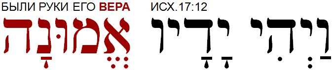
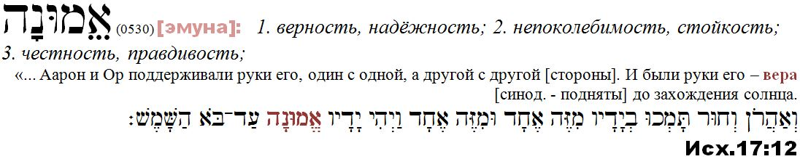
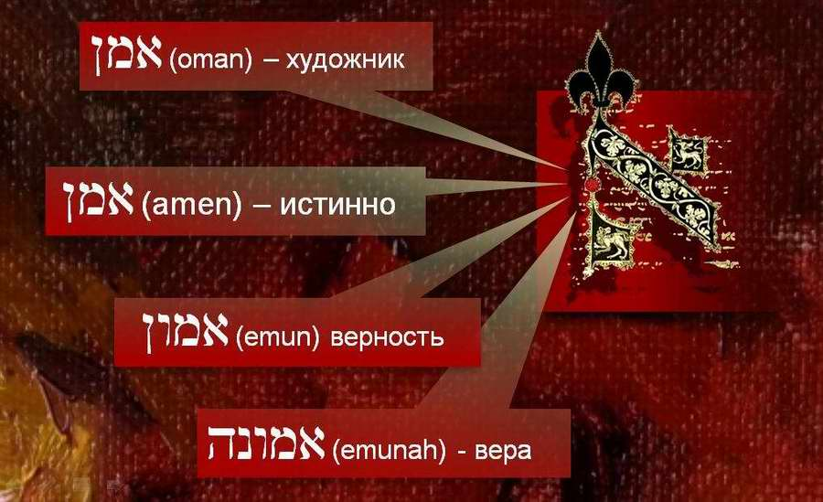
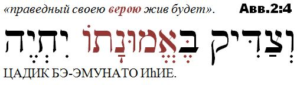

Язык Библии · Арт-мидраш · Библия и художник
БЫЛИ РУКИ ЕГО - ВЕРА /Исх.17:12/
Художник на иврите – ОМАН. Оман [художник] и эмуна [вера] - слова одного корня и понятия одного порядка. Они говорят об одном и том же как бы с разных сторон. Этими дарами (верой и творчеством) Бог наделяет каждого человека, чтобы он был в состоянии взаимодействовать с Творцом. Без веры не можем видеть Бога. Человеку веры важно осознать это и развивать, посеянное в него семя.

ВАИhИЮ ЯДАВ ЭМУНА
Употребление слова ОМАН в современном языке несколько отличается от языка Библии. Сегодня оно подобно английскому artist (художник в широком смысле слова). Особый интерес представляет смысл этого слова в тексте Библии. Лишь дважды мы встречаем его в ТАНАХЕ.
Оно, восходит к другому слову др.евр. языка, известному, всем – АМЭН. Это слово часто произносимо в мире. В оригинале (на ивр.) оно звучит с ударением на последний гласный звук амЭн (в русском языке – аминь). Три буквы, его составляющие (алеф-мем-нун) представляют собой корень, общий "семье" слов.

Вот несколько слов с корнем а-м-н:
1. ОМАН (=АМАН) – художник
2. АМЭН – верно, истинно
3. ЭМУН – доверие
4. ЭМУНА – вера
«...Были руки его – вера» (Исх.17:12)

В Синодальном переводе сказано: «были руки его подняты». Буквально же надо перевести: «были руки его – вера» (ваехие ядав эмуна). Это был ярчайший акт творчества. Моше творил иную реальность. Израиль побеждал не только волей Всевышнего. Бог и человек творили реальность вместе. Это доказывает то обстоятельство, когда руки Моше ослабевали, Израиль начинал терпеть поражение. Божий промысел и ВЕРА Моше сделали это.
Т.е. побеждал Израиль – верой Моше. И зримый знак этой веры – воздетые к небу руки.
Не раз верой отцы наши творили новую реальность (см. посл. К Евреям гл.11).
Вера - это действие, это творение новой реальности. Вера - это совместное с Богом творчество (или сотворчество Богу).
Но само творчество безусловно предполагает и созерцание. И без него не возможно, т.к. мы говорим о СОтворчестве Творцу. Эта как игра в четыре руки, предполагающая прислушивание др. к другу партнеров.
Определение веры в послании К Евреям (гл.11:1) фактически описывает творческий процесс. То, что не видимо глазу многих, открывается художнику, чтобы он через свое творчество осуществил, воплотил ожидаемое в своих произведениях, чтобы откровение это стало явно для многих.
Вообще, человек – существо верующее по сути своей. Он был сотворён таковым изначально. Вера - условие существования человека.

ДАНИЭЛЬ КРУГЛОВ: муз. импровизация на н.гл. Торы (Шемот /Исх./ 13:17-17:16)

***
אֵמוּן (0529) [эмун]: верность, надёжность, правдивость, истина.
«…народ праведный, хранящий истину».
גוי־צדיק שמר אמנים
Ис. 26:2***
אמן (0539): [омен — эмин]: 1. быть верным, надёжным, быть непоколебимым. 2. воспитатель, нянька.
Аврам поверил Господу, и Он вменил ему это в праведность.
וְהֶאֱמִן בַּיהוָה וַיַּחְשְׁבֶהָ לּוֹ צְדָקָה׃
Быт. 15:6Бытие 15:6 – это первое употребление этого словарного корня в Писании.
Одно из значений (0539) – воспитатель. Это – тот, кому доверяют ребенка. Он должен заслуживать доверия.
***
אָמֵן (0543) [амен]: 1. сущ. истина; 2. нареч. истинно, верно, аминь;
Часто мы произносим это слово, не задумываясь. Между тем, это не просто слово, которым принято заканчивать молитву. Это как бы печать, удостоверяющая истинность сказанного. Говоря амэн, мы берем на себя ответственность за свои (или чужие) слова.
Художник, творя, берет на себя ответственность за свои произведения...
верный (амин) - верный кому-то, верный слову своему. Художник – верен Призвавшему его и Одарившему всеми талантами. (См. притча о талантах (Матф.25:15-28), за которые каждый даст отчет.
Другое значение, не менее актуальное для художника: ВЕРНЫЙ – в смысле правильный, истинный взгляд на этот мир, на людей и Сотворившего все.
Т.е., творчество художника должно стремиться к истине во взгляде и передаче реальности, нас окружающей. Говоря – верная передача реальности, я вовсе не имею в виду натурализм, гиперреализм и, т.п. Это м.б. любое направление в искусстве. Верный, в нашем случае, значит правильный угол зрения, виденье через призму Писания, стремление видеть «глазами» hа-Творца (сквозь правильные очки). Понятно, что художник может ошибаться (Бог вовсе не лишает нас этого права, Он только желает, чтобы мы постоянно сверялись с Его правдой, Его пониманием, искали Его видения...
Я не имею в виду, будто творчество человека само может быть истиной. Оно может стремиться к познанию Творца, бесконечно приближаться к этой самой истине, источником и хранителем коей является один только Всевышний.
В практическом плане такой подход предполагает:
1. личные живые отношения. с Творцом. Не думаю, что серьезному художнику надо это много объяснять; он знает, что значит искать живое вдохновение, «музу».
2. верно видеть и верно передать. - хороший пример - Бецалель. От него требовалось верно передать увиденное на горе.
Интересно, в армянском языке "Ам"- означает все , а "Эн " - означает Бог, так что они вместе, составляя слово "АмЭн", звучат на армянском так: Тот кто создал все. Это не доказывает ничего в иврите и все же это очень интересно.
ВЕРА неотделима от творчества. И творчество не возможно без веры /это релевантно в т.ч. и для тех, кто именует свою веру атеизмом.../. Истинное творчество /то что несёт в себе отблеск истины/ неразрывно связано со словом истины и ТВОРЦОМ, это слово пославшим. Не случайно оман и эмуна имеют один корень /когда-то имели и будут иметь в будущем/.
אָמָּן (0542) оман [= аман]: искусный мастер, человек искусства, артист.
«О, как прекрасны ноги твои в сандалиях, дщерь именитая! … дело рук искусного художника».
מַה־יָּפוּ פְעָמַיִךְ בַּנְּעָלִים בַּת־נָדִיב … מַעֲשֵׂה יְדֵי אָמָּן׃
Песн. 7:2Итак, влияет ли на понятие «ХУДОЖНИК» и «ТВОРЧЕСТВО» близкое родство со всеми выше перечисленными словами того же корня?
ВЕРЫ нет без ТВОРЧЕСТВА. И ТВОРЧЕСТВА нет без ВЕРЫ. Этот вывод вытекает из древнееврейского языка Писаний. К тому же выводу придем, если размыслим над греческим текстом Нового Завета. Если возьмем описание ВЕРЫ.
Что же скажем?
1. Оман [художник] и эмуна [вера] - слова одного корня и понятия одного порядка. Они говорят об одном и том же как бы с разных сторон. Этими дарами (верой и творчеством) Бога наделяет каждого человека, чтобы он был в состоянии взаимодействовать с Творцом. Без веры не можем видеть Бога.
2. Не случайно эти слова, как и их корень начинаются с буквы алеф. "А" - первая буква в еврейском алфавите. Она, представляет собой, как бы символ Бога (помните: "Я - Альфа и Омега"). Еврейская традиция не изображает Бога. Алеф - дает начало каждому слову этой семьи а-м-н, подобно тому, как дает начало всему Бог – Творец. Именно Он начало и источник истины, веры, творчества...
3. Не случайно вера связана здесь с руками. Вера призвана творить. Руки - символ твореня.
ДАНИЭЛЬ КРУГЛОВ: муз. импровизация на н.гл. Торы (Шемот /Исх./ 13:17-17:16)
Я НАМЕРЕН ВЕРНУТЬСЯ К ЭТОЙ ТЕМЕ, чтобы всмотреться в слово ХУДОЖНИК /ОМАН/ в одной из следующих статей.
А что вы думаете о вашей вере? И вашем творчестве?
автор: Эфраим Калиш /TORAART/
ЕСЛИ ЭТОТ МАТЕРИАЛ БЫЛ ВАМ ПОЛЕЗЕН, ПОЖАЛУЙСТА, ПОДЕЛИТЕСЬ ИМ С ДРУЗЬЯМИ
читайте также по теме:
БЕЦАЛЕЛЬ — СЫН СВЕТА. Призвание. ч.I БЕЦАЛЕЛЬ (Веселеил) — СЫН СВЕТА. Под покровом Всевышнего, ч.II БЕЦАЛЕЛЬ — СЫН СВЕТА. Свет Господень, ч.III БЕЦАЛЕЛЬ (Веселеил) — СЫН СВЕТА. Дед ХУР, ч.IV БЕЦАЛЕЛЬ — СЫН СВЕТА. Славящий Бога, ч.V Призван быть ОЧИЩЕННЫМ. Дед Бецалеля — ХУР --- Школа Бецалеля. ПРИЗВАНИЕ УЧИТЬ Школа Бецалеля. РОДИТЕЛЬ Школа Бецалеля. Сердце учителя БЫЛИ РУКИ ЕГО — ВЕРА /Исх.17:12/. Художник и вера Святилише — МИШКАН и МИКДАШ Бецалель. МЕНОРА — знак школы Прямое ПОПАДАНИЕ В ЦЕЛЬ